Contributing to quincunx development
Source:vignettes/quincunx-development.Rmd
quincunx-development.RmdIf you feel like contributing to quincunx source code please feel free to make a pull request or ask questions in GitHub Issues.
API underlying retrieval functions
To gain a glimpse of how the core functions of quincunx are organised and dependent on each other please check out this table: 
Family of get_<entities>() functions
At the exposed API, the family of functions that the user sees are those get_<entities>(), e.g., get_scores() or get_sample_sets(). The family of internal functions coerce_to_S4_<entities>() translate a list of relational tibbles to an S4 object. The advantage of having these lists of tibbles encapsulated as S4 objects is that you can then benefit from methods written for them. The placeholder <entities> stands for one of: scores, publications, sample_sets, performance_metrics, traits, trait_categories, cohorts or releases.
Family of get_<endpoint> functions
<endpoint> is typically a loosely based snake case name of a PGS Catalog endpoint, e.g., the endpoint '/rest/score/search' used with the trait_id parameter has the corresponding quincunx function: get_score_by_trait_id().
Family of get_<type> functions
<type> is often the name of a PGS Catalog entity in the singular, e.g., score for polygenic scores, that corresponds to the function get_score(). This family of functions will return always the same type of return value, that is a list of relational tibbles. The heavy lifting of translation from JSON to tibbles happens in as_tidy_tables_<entities>.
Low-level functions: get(), request_all() and request()
At the bottom of the stack httr::GET() is the actual function that retrieves a JSON response from a specific URL. request() is quincunx’s fundamental function after httr::GET(). request() calls a memoised version of httr::GET() —memoised_GET()— to make the package more agile and to avoid hammering the REST API server unnecessarily. request_all() does essentially the same as request() but handles pagination, meaning that it will follow all pages until it has gathered all results. The get() function adds metadata columns to the tibbles, namely, ..resource (full endpoint URL), ..timestamp (endpoint retrieval timestamp), ..page (endpoint pagination).
S4 classes
S4 classes are defined and documented in source files named class-<entities>.R, e.g., class-scores.R or class-performance_metrics.R
Parsing of JSON to tibbles
The conversion from JSON use done using the terrific package tidyjson. The source files containing the code for this are parse-<entities>.R, e.g., parse-cohorts.R or parse-publications.R. Some parsing functions are also used across different entities, and in those cases they have dedicated source files: unwrap_<entities>.R, e.g., unwrap_efotrait.R or unwrap_sample.R.